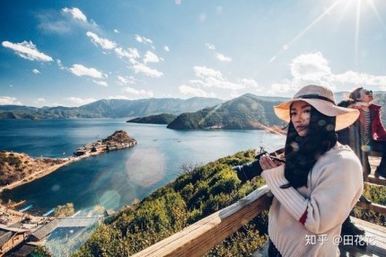
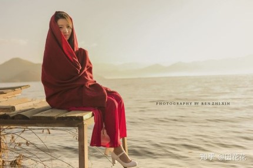
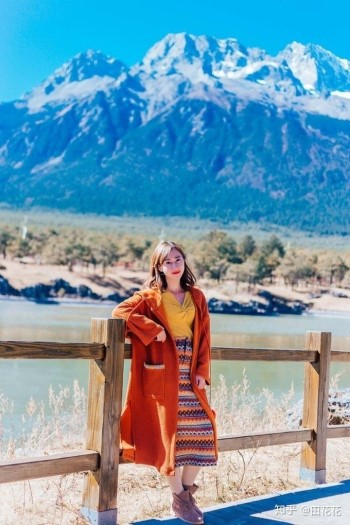
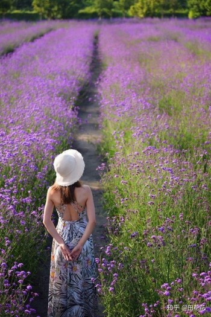

Tout d'abord, selon la façon dont vous jouez, si vous voulez aller au Yunnan pour des vacances ou simplement pour faire du tourisme. Si vous êtes en vacances, choisissez la route Lijiang Dali Tengchong. Si vous vous promenez, il n'y a rien à dire. Tous sont juste Ma Guanghua. Mais, D'abord venu au Yunnan pour faire un voyage à Honghe, puis à Kunming à Dali; Lijiang volait de Lijiang à Tengchong en Birmanie à Ruili puis revenait à Kunming. Il y a des avions partout, mais il est difficile d'acheter un billet pour Tengchong pour le moment Oh, il y a trop de monde, cela dépend de la route et du type de jeu que vous choisissez.
Si vous ne vous précipitez pas, c'est presque un mois. Je pense que ça vaut le coup d'aller à Dali, Lijiang, Shangri-La et Xishuangbanna.
Si vous visitez le Yunnan pour la première fois, les itinéraires les plus classiques recommandés sont: Kunming - Dali - Lijiang - Lugu Lake - Shangri-La.
Il y a beaucoup de classiques classiques sur cette ligne, et ils sont plus concentrés. Ils sont tous sur une même ligne. Il y a des aéroports partout, et de nombreuses villes à travers le pays ont des vols directs. Le trafic est également très pratique, vous pouvez mélanger et assortir selon votre propre temps.
(1). Protection solaire: Les rayons ultraviolets sont très puissants, vous devez apporter des produits solaires: lunettes de soleil, parasols, chapeaux solaires, crème solaire (indice plus élevé), baume à lèvres, etc. peuvent prévenir efficacement les rayons ultraviolets.Si vous ne prenez aucune mesure de protection solaire, la peau est facilement bronzante Ou des coups de soleil.
(2). Argent comptant: Bien qu'Internet soit bien développé, il vaut mieux apporter un peu de monnaie. Dans certains endroits, seuls l'argent comptant est accepté.
(3). Masque hydratant: le Yunnan est vraiment sec, mais le temps au Yunnan est très différent tôt ou tard: il peut faire froid lorsque vous sortez le matin, le soleil deviendra très chaud à midi, et il fera très froid la nuit.
(4). Médicaments: selon votre état de santé, vous devez également apporter les médicaments debout requis tels que la rhodiola, le Yunnan Baiyao, le rhume, la médecine gastro-intestinale, le mal des transports, le pansement et d'autres anti-inflammatoires, analgésiques, mal de mer, mal de mer, antipyrétiques, huile de vent Raffiné, toutes sortes d'huile. Pour certains voyageurs âgés et fragiles, des médicaments d'urgence sont également nécessaires.
(5). Vêtements: manteaux, été, apportez pantalons, chemisiers, chapeaux. Il est recommandé de préparer 3 à 5 ensembles de vêtements et les sous-vêtements peuvent être apportés de manière appropriée. Ceux qui aiment prendre des photos doivent apporter des jupes longues + des jupes courtes + des costumes traditionnels locaux ou des costumes ethniques.Ce sont tous des outils de photographie, qui peuvent donner une sensation de superproduction.
(6). Chaussures: Les chaussures les plus adaptées sont les chaussures de voyage. Les tissus légers et doux et les semelles antidérapantes sont meilleurs. La taille des chaussures est légèrement plus lâche. Ne soyez pas trop serré. Il est préférable de ne pas porter de talons hauts lorsque vous voyagez sur un sol féminin.
"Un jour a quatre saisons" est une caractéristique climatique commune dans de nombreuses régions du Yunnan. Il est difficile de distinguer avec précision les saisons des vêtements des gens en marchant dans la rue. En raison du temps changeant de la journée, les gens doivent changer les vêtements des quatre saisons Tous sont portés sur le corps, qui est aussi l'un des "dix-huit monstres du Yunnan", "vêtus des mêmes vêtements pour les quatre saisons".
(1). Été: jupe + pantalon + T-shirt + robe + manteau.
(2). Printemps, automne, hiver: pantalon + manteau épais + doudoune.
(3), la différence de température du Yunnan matin et soir est grande, quelle que soit l'heure à venir, il est préférable d'apporter une veste.
(4), Xishuangbanna Même en hiver et au printemps, seulement un peu froid la nuit, des pantalons longs + des manches longues peuvent être. D'autres fois, il suffit d'avoir des manches courtes + un short.
(5). Il n'est pas recommandé de porter des shorts et des manches courtes, le Yunnan a de forts rayons ultraviolets, qui peuvent facilement endommager la peau.
 *Si vous souhaitez visiter la montagne de neige de Yulong, le parc Pudacuo et d'autres attractions, vous n'avez pas nécessairement besoin d'apporter votre propre manteau en coton, car il y a des vestes en location au pied de la montagne, 50 yuans / pièce; des chaussures pour enfants qui ont peur des ennuis et n'ont pas peur de dépenser de l'argent peuvent envisager de louer une veste temporaire.*